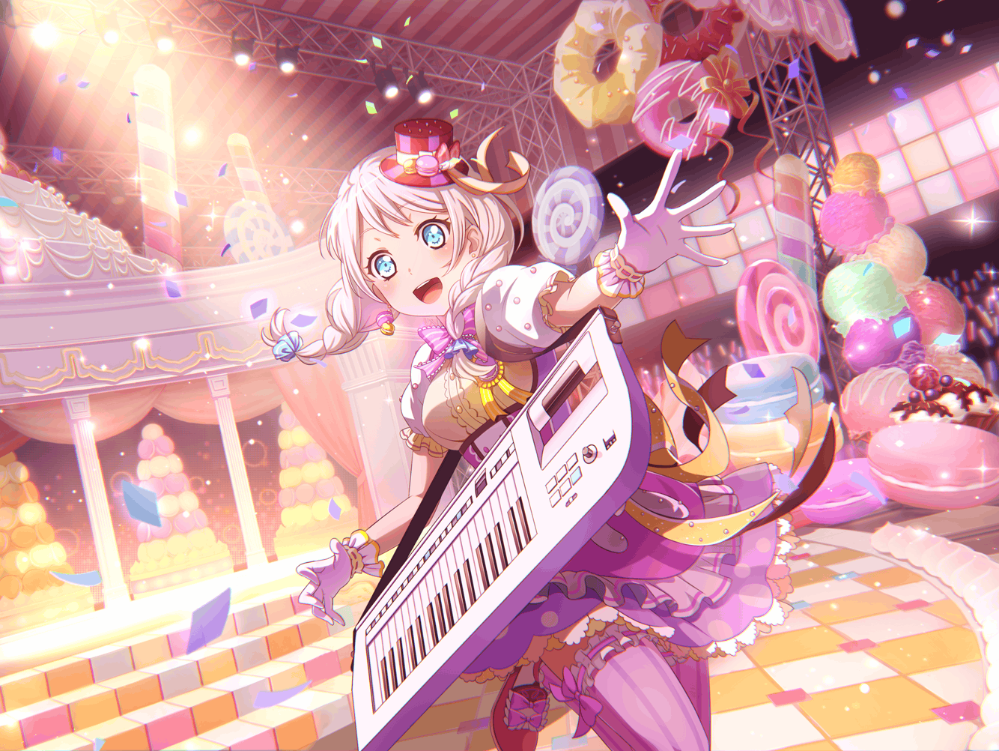

イヴ
～～～～♪
イヴ
あっ、{{userName}}さんじゃないですか！
イヴ
こんにちは、こんなところで会うなんて奇遇ですね！
イヴ
何をしてるんですか？
イヴ
……買い物？
ふふ、私と一緒ですね！
イヴ
私も、何か面白いものがないかなって買い物にきたんです！
イヴ
……そうです！
ここで会ったが百年目とも言いますし、
もし、よければ少しお話しませんか？
イヴ
……ホントですか！？
はい、よろしくお願いします！！
イヴ
それでは、えっと……
イヴ
{{userName}}さんは時代劇とかお好きですか？
イヴ
え？ なんとか越前とか？
イヴ
そうそう！ そういうのです！
イヴ
やはり、時代劇はブシドーを知るにはうってつけのドラマです！
イヴ
……ブシドーとは何か、ですか？
イヴ
あー……えっと、そのですね……
イヴ
すみません……
実は私もブシドーのなんたるかに詳しいわけではないんです……
イヴ
あ、でもこれだけはわかります！
イヴ
相手を思いやり、礼を重んじる……！
イヴ
それもブシドーの１つだと、私は信じています！
イヴ
え？ 信じることは大事？
イヴ
はい！ 私もそう思います！
イヴ
私はあの時に、その信じることの大切さを知りました……
イヴ
……あの時って何、ですか？
イヴ
そうでした、{{userName}}さんは知らなかったんでしたよね
イヴ
あの時って言うのは、
アヤさんとチサトさんが言い争いになった時のことなんです
イヴ
チサトさんがアヤさんに、
努力が必ずしも報われるとは限らないと……
そういう感じの言葉を言ったんです
イヴ
もちろん、チサトさんも悪気があったわけじゃないと思います
イヴ
でも、いっぱい努力してきたアヤさんにとって、
その言葉は何より辛いものだったはずです……
イヴ
でも、アヤさんは、諦めずに努力を続けました
イヴ
自主練をいっぱいして、ひたすら前に歩き続けたんです！
イヴ
……チサトさん、ですか？
チサトさんは……言い争いの前も、後も、
なかなか自主練に来ませんでした
イヴ
きっと、お仕事が重なっちゃったんだと思います……
イヴ
それでもアヤさんと私達は、練習を続けて待ちました
イヴ
きっと、チサトさんも来てくれる……そう信じて
イヴ
それから、ええと……
詳しくは、おふたりしかわからないんですが……
イヴ
アヤさんとチサトさんは仲直りできたみたいで、
チサトさんも自主練に来るようになったんです！
イヴ
……とても安心しました
イヴ
でも……正直、同じくらい、とても不安だったんです
イヴ
もしこのままチサトさんが来なかったら……？
イヴ
もし……もしチサトさんがパスパレを辞めてしまったら……？
イヴ
その考えが、ずっと頭から離れなくて……
イヴ
だけど、先ほども言いましたが、
アヤさんは決して、練習を辞めませんでした
イヴ
それは、アヤさんが『努力すれば報われる』と、
信じていたからに他ならないんです
イヴ
だから、私も信じることにしました
イヴ
チサトさんは必ず帰ってくる……と。
アヤさんの鉄のような意志を見習って……
イヴ
……はっ！？
イヴ
す、すみません、長々と喋ってしまって……
イヴ
……でも、私は思うんです
イヴ
みなさんは仲間です。
仲間とは、互いを信じあうものです
イヴ
それは武士としてではなく、
人として当然のことではありませんか？
イヴ
……はい、そうですよね！
イヴ
……え？
私のような仲間思いの友人を持って、
パスパレは幸せ者だ？
イヴ
そ、そうですか？
えへへ……ありがとうございます！
イヴ
私、みなさんや{{userName}}さんに出会えて、
本当によかったです！